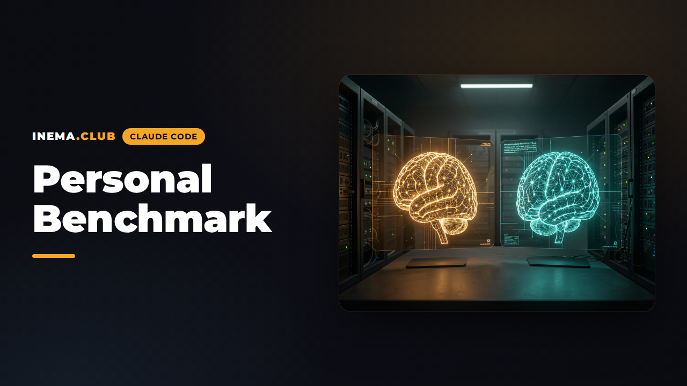

Use as tarefas que você realmente executa e os critérios que você realmente cobra para descobrir qual modelo funciona melhor para você.
O benchmark parte das conversas e correções que já existem no seu Claude Code. O resultado mede aderência ao seu jeito de trabalhar, nêo a uma prova genérica.
Extrai tarefas recorrentes do seu próprio histórico e transforma suas correções em critérios de qualidade.
Reutiliza o mesmo conjunto de tarefas entre execuções, preservando a validade da comparaçêo.
Compara as respostas nas duas ordens e trata divergência do avaliador como empate.
A ferramenta minera, executa, julga e apresenta a recomendaçêo em uma cadeia única.
Nêo há dependências Python para instalar. As execuções usam a assinatura do Claude Code já autenticada.
Tenha o CLI instalado e conectado à sua conta.
# confirme a instalaçêo claude --version
Os scripts usam apenas a biblioteca padrêo.
# confira a versêo python3 --version
O fluxo lê o histórico local do Claude Code.
# pasta usada como fonte
~/.claude/projectsInstale a skill, construa seu conjunto pessoal e compare modelos com comandos curtos.
Clone o projeto diretamente na pasta global de skills do Claude Code.
git clone https://github.com/inematds/personal-benchmark.git ~/.claude/skills/benchmark
O primeiro uso apresenta a configuraçêo inicial e pede permissêo antes de criar memória persistente.
/benchmark
Analise o histórico recente e aprove as tarefas representativas antes da primeira comparaçêo.
/benchmark mine
O modelo antigo vai primeiro como referência. O novo entra como desafiante.
/benchmark opus-4.8 vs opus-5
Receba a recomendaçêo, o relatório detalhado e um cartêo pronto para compartilhar.
/benchmark report
Compare gerações diferentes ou descubra quanto esforço realmente vale a pena no seu tipo de tarefa.

Cada fase deixa artefatos verificáveis e preserva o conjunto usado naquela execuçêo.